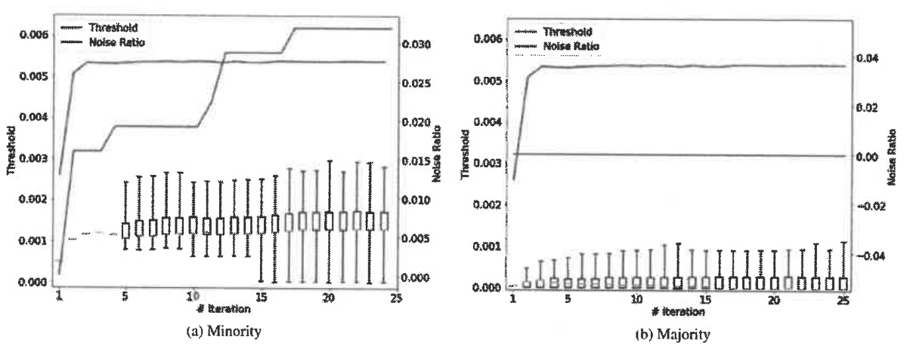

Noise filtering that preserves difficult minority samples
Improved noise-filtering algorithm for AdaBoost using the inter-and intra-class variability of imbalanced datasets
This study addresses excessive removal of difficult minority-class samples as noise in AdaBoost. I applied different thresholds to each class’s weight distribution and evaluated sample retention and AUROC on original and noise-injected data.
- Method: class-specific means and two thresholds accounting for distribution asymmetry
- Evaluation: 11 datasets, 10–40% noise, AUROC and sample retention


Research problem
AdaBoost increases the weights of repeatedly misclassified samples. In imbalanced data, informative minority samples can also receive high weights. A single filtering criterion for all classes can therefore remove too much minority-class information.
Approach
- Case 1 · Class-specific means: Sets a separate threshold for each class by multiplying its mean sample weight by an adjustment coefficient.
- Case 2 · Distribution asymmetry: Accounts for the spread and asymmetry of each class’s weight distribution. The 15th and 85th percentiles and the median reduce the problem of identical quartiles. Filtering is skipped when the two percentiles coincide.
- Integration into learning: Sets the weights of samples exceeding the threshold to 0, replacing the existing filtering stage in ORBoost and RUSBoostWO.
Original-data and noise-injection experiments
I evaluated the 11 imbalanced datasets reported in the tables and conclusions using depth-1 CART, 50 boosting iterations, and 30 repetitions of stratified 5-fold cross-validation. The main metric was AUROC. Noise was injected by giving synthetic samples the opposite class label while preserving the class ratio. Direct sample selection, proportional to a neighbor-distance ratio, was compared with Inverse selection, inversely proportional to it. Noise levels ranged from 10–40% in 10% increments.
Contributions
As first author, I investigated filtering that accounts for differences in classification difficulty between classes. The study combines class-specific thresholds with noise-injection experiments that preserve the imbalance ratio.
Better sample retention; performance depends on conditions
| Dataset | Original ORBoost | Class-specific Case 1 |
|---|---|---|
| Oil | 0.7220 | 0.8946 |
| Mammography | 0.6919 | 0.9362 |
| KC1 | 0.6610 | 0.6481 |
Mean AUROC; higher is better. These are examples for a specific model and setting on original data, not averages across all datasets or noise-injection results.
The rate at which minority samples were identified as noise decreased, and prediction improved under several conditions, but not on KC1. Case 1 generally outperformed Case 2. Case 2 with RUSBoostWO sometimes stopped filtering because its percentiles coincided. Minority-sample retention alone does not establish improved predictive performance.